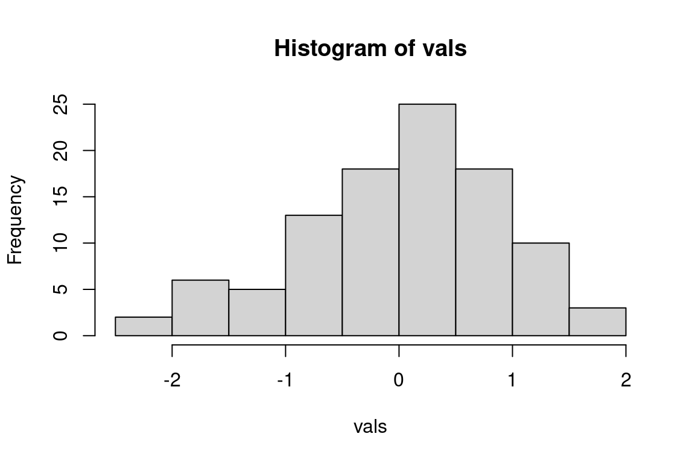

3 Open science for impactful products
3.1 Goals and motivation
This is the third module in our workshop on open science. Now we focus on how Quarto can be used as a document preparation system to generate easily shared web content.
- Goal: understand best practices for reproducible documents using Quarto
- Motivation: cultivate your analyses as living, shared resources
3.2 Quarto
Quarto is a relatively new document preparation system that lets you create reproducible and dynamic content that is easily shared with others. Quarto is integrated with RStudio and allows you to combine plain text language with analysis code in the same document.
Quarto belongs to a class of reporting tools called dynamic documents or literate programming. It is not the first of its kind, but it builds substantially on its predecessors by bridging multiple programming langues.
Advantages of creating analyses using Quarto include:
- Clear demonstration of a workflow using plain text and code
- Reproducible materials allows others to use your work
- Easily shared content (e.g., on GitHub)
This next section will run through the very basics of creating a Quarto document, some of the options for formatting, and how to generate shared content. You’ll follow along in this module.
Create a new project in RStudio, first open RStudio and then select “New project” from the File menu at the top.

Then select “New Directory”. Create a directory in a location that’s easy to find.

Open a new Quarto file from the File menu under New file > Quarto Document.

Enter a title for the document (e.g., “Quarto practice”) and your name as the author. Use the defaults for the other options and hit “Create”.

Save the file in the project root directory (give it any name you want).
Let’s get familiar with the components of a Quarto document.
TipThe three types of information included in a Quarto document are:
- YAML
- Code chunks
- Plain or Markdown text
The new file is completely empty except for the title, name, and editor type at the top. The content at the top is called YAML, which defines global options for the document.
--- title: "Quarto practice" author: "Marcus Beck" editor: visual ---You’ll also notice that there’s a button on the top-left that lets you toggle between “source” or “visual” editor mode. The source editor simply lets you add text to the document, whereas the visual editor lets you add content that is partially rendered. First time Quarto users may prefer the visual editor.

Using the visual editor, we can insert a code chunk (or code cell). This can be done by selecting the appropriate option from the Insert menu. Note the variety of programming langues that can be used with the code chunk.
We can enter any code we want in the code chunks, including options for how the code chunk is evaluated. Options are specified using the hashpipe notation,
#|.```{r} #| echo: true print('Hello Quarto!') ```When the file is rendered, the code is run and results displayed in the output. There are many options to change how code chunks are executed, which we’ll discuss below.
print('Hello Quarto!')[1] "Hello Quarto!"We can also run the code chunks separately without rendering the file using the arrow buttons on the top right in the source document. This can be useful for quickly evaluating your code as you include it in the file.
TipCode chunks are executed in the order they appear in the document when a .qmd file is rendered.
Descriptive text can be entered anywhere else in the file. This is where we can describe in plain language what our analysis does or any other relevant information. Text can be entered as-is or using simple markdown text that can format the appearance of the output. If you’re using the visual editor, you can use some of the items in the file menu to modify the text appearance. In the source editor, you can manually enter markdown text:
I can write anything I want right here. Here's some **bold text**. I can also make lists 1. Item 1 1. Item 2When the file is rendered, the markdown text will be formatted. The text will be formatted already using the visual editor:
I can write anything I want right here. Here’s some bold text.
I can also make lists
- Item 1
- Item 2
Render the .qmd file to the output format.
The source file is a .qmd document. We need to render the document to create the output format - HTML (default), PDF, or Word. The following happens when you hit the render button at the top.

Here’s what your RStudio session should look like (note the three parts of the source .qmd document - YAML, code chunk, and Markdown text). The rendered HTML file will appear in the Viewer pane on the right.
TipA rendered Quarto document as an HTML, PDF, Word, or other file format is stand-alone and can be shared with anybody!
3.2.1 Code chunk options
The behavior of the code chunks can be changed using the many options available in Quarto. This can be useful for a few reasons.
- Only displaying the output of a code chunk
- Only displaying the code and not running the chunk
- Running the code without displaying output for use
- Suppressing warnings and messages
- Defining table or figure options (e.g., height, width, captions, etc.)
Code chunk options can be applied globally to all chunks in the document or separately for each chunk.
To apply them globally, they’ll look something like this in the YAML, where options are added after execute:
---
title: "My Document"
execute:
echo: false
warning: false
---Be careful with indentation in the YAML, the document won’t render if the indentation is incorrect.
To apply to individual code chunks, use the #| (hashpipe) notation at the top of the code chunk. This will override any global options if you’ve included them in the YAML. Below, echo: true indicates that the code will be displayed in the output.
```{r}
#| echo: true
plot(1:10)
```Here’s a short list of other useful execution options:
| Option | Description |
|---|---|
eval |
Evaluate the code chunk (if false, just echos the code into the output). |
echo |
Include the source code in output |
output |
Include the results of executing the code in the output (true, false, or asis to indicate that the output is raw markdown and should not have any of Quarto’s standard enclosing markdown). |
warning |
Include warnings in the output. |
error |
Include errors in the output (note that this implies that errors executing code will not halt processing of the document). |
include |
Catch all for preventing any output (code or results) from being included (e.g. include: false suppresses all output from the code block). |
message |
Include messages in rendered output |
3.2.2 Figures and tables
Figures and tables are easily added in Quarto, using either R code or importing from an external source.
Any figures created in code chunks will be included in the rendered output. Relevant code chunk options for figures include fig-height, fig-width, fig-cap, label (for cross-referencing) and fig-align.
```{r}
#| label: fig-myhist
#| fig-height: 4
#| fig-width: 6
#| fig-cap: "Here's my awesome histogram."
#| fig-align: "center"
vals <- rnorm(100)
hist(vals)
```
Figures can be cross-referenced in the text using the @ notation with the figure label.
Here's a cross-reference to @fig-myhist.When the file is rendered, the appropriate figure number will be displayed with a link to the figure:
Here’s a cross-reference to Figure 3.1.
Similarly, tabular output can be created inside code chunks.
```{r}
#| label: tbl-mytable
#| tbl-cap: "Here's my awesome table."
totab <- data.frame(
Species = c('Bluegill', 'Largemouth bass', 'Crappie'),
Count = c(12, 5, 4)
)
knitr::kable(totab)
```| Species | Count |
|---|---|
| Bluegill | 12 |
| Largemouth bass | 5 |
| Crappie | 4 |
And a cross-reference:
Here's a cross-reference to @tbl-mytable.Here’s a cross-reference to Table 3.1.
Label tags for tables and figures should include the tbl- or fig- prefix for proper cross-referencing.
Figures can also be imported from an external source (e.g., from your computer or the web) using this notation:
Adding captions and labels to external figures looks something like this:
{#fig-crappie}The cross-reference is done the same.
Here's a cross-reference to @fig-crappieHere’s a cross-reference to Figure 3.2.
Likewise, tables can be imported from an external source (e.g., Excel). You’ll want to do this in a code chunk and add the appropriate options (e.g., to cross-reference Table 3.2).
```{r}
#| label: tbl-habitats
#| tbl-cap: "The first six rows of our tidy data"
mytab <- readxl::read_excel('data/tidy.xlsx')[1:6, ]
knitr::kable(mytab)
```| Location | Habitat | Year | Acres | Category |
|---|---|---|---|---|
| Clear Bay | Seagrass | 2019 | 519 | B |
| Clear Bay | Oysters | 2019 | 390 | B |
| Clear Bay | Sand | 2019 | 742 | C |
| Fish Bay | Seagrass | 2019 | 930 | B |
| Fish Bay | Oysters | 2019 | 680 | A |
| Fish Bay | Sand | 2019 | 611 | A |
Visit these links for full details on figures and tables in Quarto. R also has a rich library of packages for producing tables, most of which play nice with Quarto.
3.2.3 Output options
html, pdf, word
Full list: https://quarto.org/docs/output-formats/all-formats.html